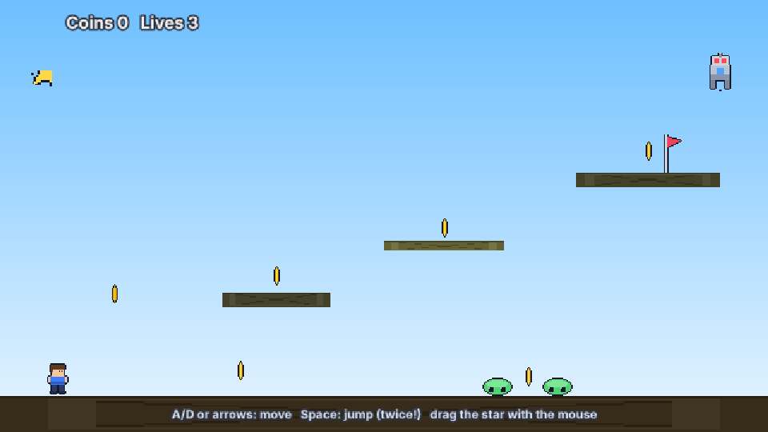
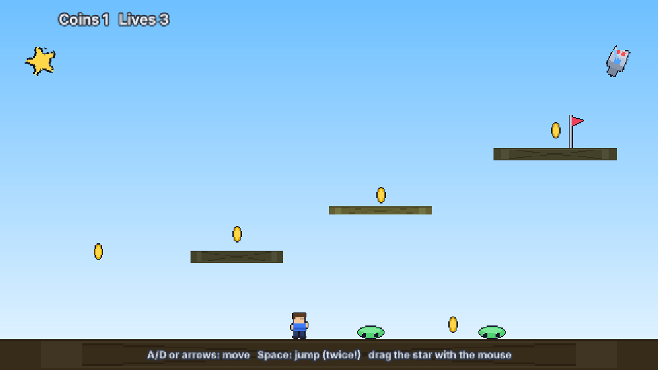
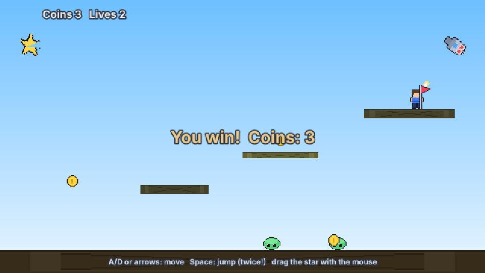

T24 A platformer from events
Result: a one-screen platformer: run and jump, collect coins, dodge slimes and a turret, reach the flag.
Already built: examples/event-sheets/ (regenerate with node tools/gen_eventsheet_demo.mjs). Open it, press play, then read along.

1. A hero that moves#
Give the Hero entity a collider and the Platform behavior. Give the ground and ledges Solid, the cloud platform Jumpthru. Add input actions left, right, jump to nord.project.json. Run it: the hero runs, jumps (twice with doubleJump) and lands.
2. Look alive (animation)#
Three events in a group, using Else:
Hero Platform is-jumpingoris-falling(Or-block) →set-animation "jump"else+Hero Platform is-moving→set-animation "walk"else→set-animation "idle"
And every tick: set-mirrored Hero.Platform.Facing < 0.
3. Coins#
Hero is-overlapping Coin → add-to-var coins 1, play a sound, Coin destroy. Because is-overlapping picked only the touching coin, destroy removes just that one.

Hud set-text "Coins " & coins & " Lives " & lives.4. Enemies#
Slimes move with Sine (horizontal, magnitude 90). They share the tag enemy, so one event covers all of them: Hero is-overlapping enemy + trigger-once-while-true → subtract-from-var lives 1, move the hero back to the start. An event lives <= 0 → restart-layout.
5. A turret#
Add Turret to the robot: targetType: "Hero", rateOfFire: 0.6. It turns toward the hero when it has a clear line (Solids block it). Then one event does the shooting:
Turret on-shoot → create-object Bullet at Turret.X, Turret.Y, then Bullet set-angle-of-motion Turret.Angle. The bullet prefab has Bullet + DestroyOutsideLayout, so shots clean themselves up. Another event, Hero is-overlapping Bullet, makes them hurt.
6. Win#
Hero is-overlapping Flag and won = 0 → set won to 1, show You win! on the Message text, disable the hero's Platform.

Try next#
- Add a Timer on the Turret to change its fire rate every 5 seconds.
- Give Coins a Tween to float up and fade when collected (
tween-property opacity), destroying them onon-tween-finished. - Make the slimes follow you with Pathfinding (
find-path Hero.X, Hero.Yevery second). - Mix in a JavaScript script for something special — scripts and events work in the same scene.
Test it from the terminal: node tools/eventsheet-demo-test.mjs (headless Chromium; screenshots land in target/eventsheets/).